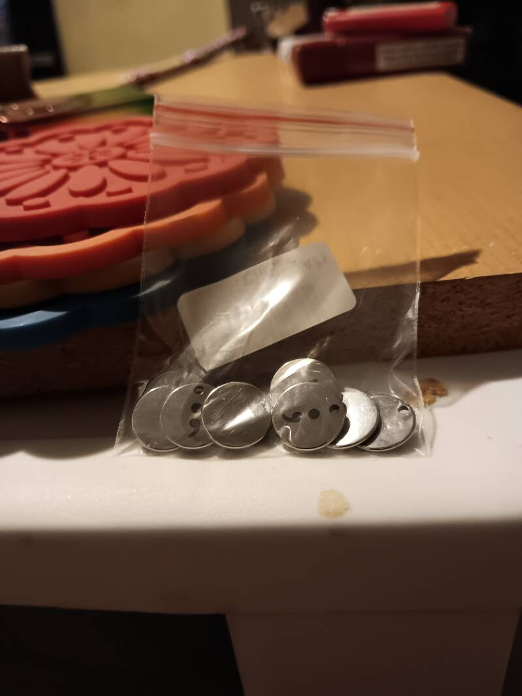
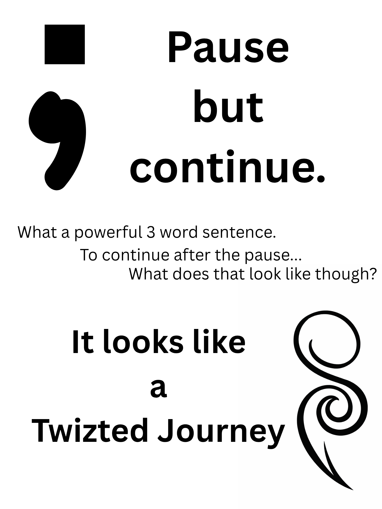

Twizted Merch
All proceeds support our mission of suicide awareness, mental health advocacy, and peer support.
From $5

 Order on Webador Store →
Order on Webador Store →

12mm Semicolon Charm
Pause but continue. Tomorrow needs you.
Stainless steel · Round · 12mm diameter · ; charm
Use for suicide, overdose, and/or mental health awareness/prevention.
1
$5
$5
3
$12
$12
10
$30
$30

Awareness T-Shirts
TJ awareness shirts. Sizes and designs vary. Check the full store for current inventory.
View on Webador Store →
Event & Awareness Items
Keychains, pins, bracelets, and event items. Available at events and through our store.
View on Webador Store →